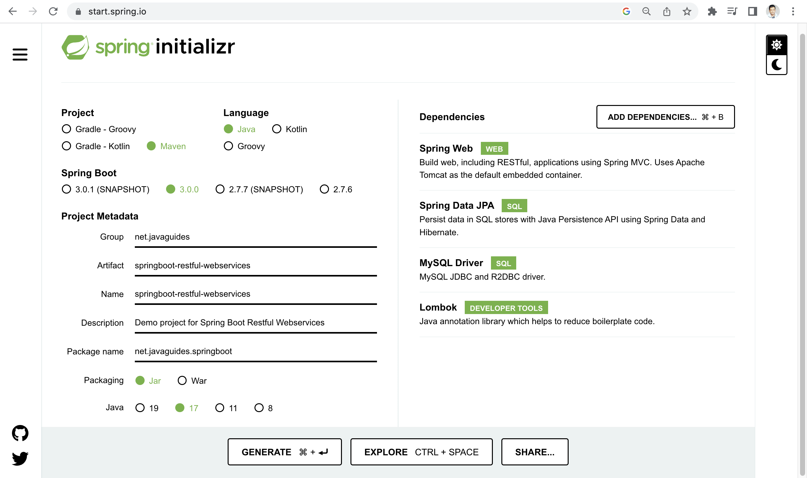
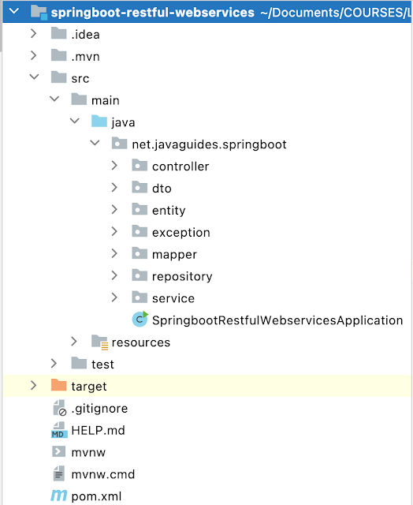
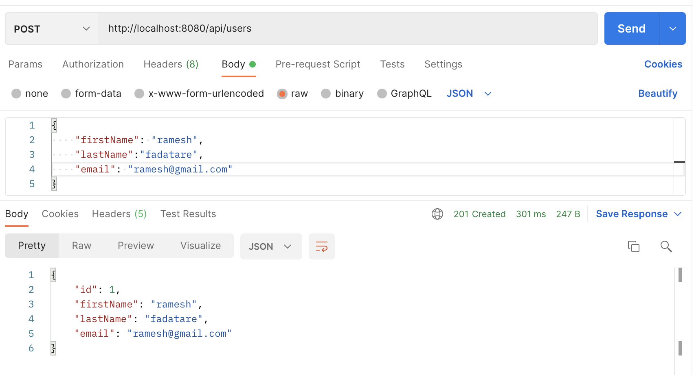
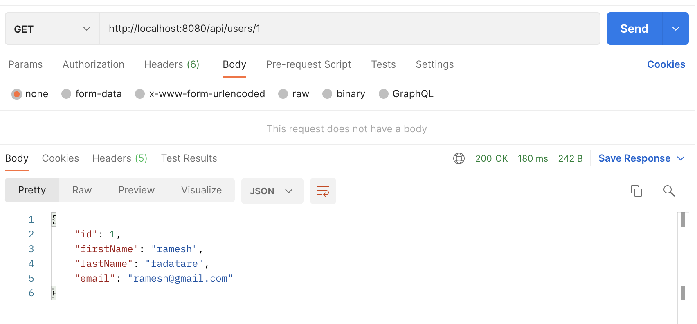
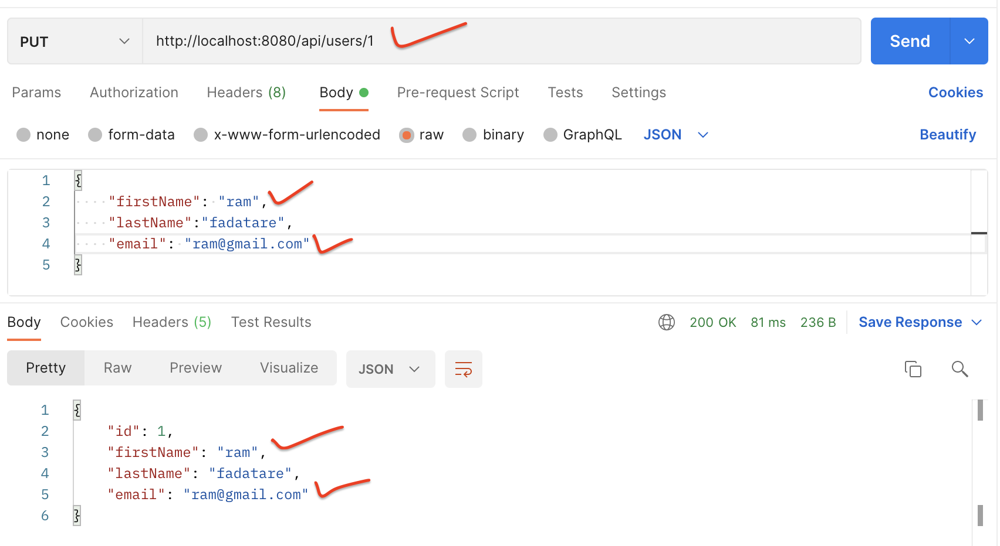
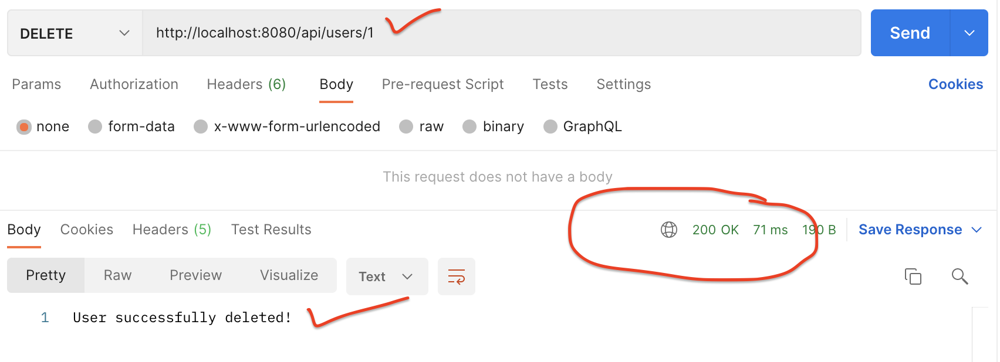

Spring Boot MySQL CRUD Example
In this tutorial, we will learn how to build CRUD RESTful API using Spring Boot 3, Spring Data JPA (Hibernate), and MySQL database.
CRUD stands for "create, read, update, and delete," which are the four basic functions of persistent storage. Spring Boot is a Java-based framework used to build web applications and RESTful APIs. Together, Spring Boot and CRUD can be used to quickly develop a RESTful API that can create, read, update, and delete data in a database.
Learn complete Spring boot at Learn and Master Spring Boot
Spring Boot Project Architecture
We are going to use three-layer architecture in our Spring boot project:

Tools and Technologies Used:
- Spring Boot 3.0
- Java 17
- Spring Data JPA
- Hibernate
- MySQL Database
- Maven
- Postman
1. Create and Setup Spring Boot Project in IntelliJ
Spring Boot provides a web tool called Spring Initializer to create and bootstrap Spring boot applications quickly. Just go to https://start.spring.io/ and generate a new spring boot project.
Refer to this screenshot to enter the details to create the Spring Boot project:
Here is the pom.xml file for your reference:
<?xml version="1.0" encoding="UTF-8"?>
<project xmlns="http://maven.apache.org/POM/4.0.0" xmlns:xsi="http://www.w3.org/2001/XMLSchema-instance"
xsi:schemaLocation="http://maven.apache.org/POM/4.0.0 https://maven.apache.org/xsd/maven-4.0.0.xsd">
<modelVersion>4.0.0</modelVersion>
<parent>
<groupId>org.springframework.boot</groupId>
<artifactId>spring-boot-starter-parent</artifactId>
<version>3.0.0</version>
<relativePath/> <!-- lookup parent from repository -->
</parent>
<groupId>net.javaguides</groupId>
<artifactId>springboot-restful-webservices</artifactId>
<version>0.0.1-SNAPSHOT</version>
<name>springboot-restful-webservices</name>
<description>Demo project for Spring Boot Restful Webservices</description>
<properties>
<java.version>17</java.version>
</properties>
<dependencies>
<dependency>
<groupId>org.springframework.boot</groupId>
<artifactId>spring-boot-starter-data-jpa</artifactId>
</dependency>
<dependency>
<groupId>org.springframework.boot</groupId>
<artifactId>spring-boot-starter-web</artifactId>
</dependency>
<dependency>
<groupId>com.mysql</groupId>
<artifactId>mysql-connector-j</artifactId>
<scope>runtime</scope>
</dependency>
<dependency>
<groupId>org.projectlombok</groupId>
<artifactId>lombok</artifactId>
<optional>true</optional>
</dependency>
<dependency>
<groupId>org.springframework.boot</groupId>
<artifactId>spring-boot-starter-test</artifactId>
<scope>test</scope>
</dependency>
</dependencies>
<build>
<plugins>
<plugin>
<groupId>org.springframework.boot</groupId>
<artifactId>spring-boot-maven-plugin</artifactId>
<configuration>
<excludes>
<exclude>
<groupId>org.projectlombok</groupId>
<artifactId>lombok</artifactId>
</exclude>
</excludes>
</configuration>
</plugin>
</plugins>
</build>
</project>
Project Structure
Refer to this screenshot to create a project structure:
Configure MySQL Database
Let's first create a database, go to MySQL workbench, and use the below SQL query to create a new database:
create database user_managementNext, open the application.properties file and add the following properties
to it.
spring.datasource.url=jdbc:mysql://localhost:3306/user_management
spring.datasource.username=root
spring.datasource.password=Mysql@123
spring.jpa.properties.hibernate.dialect=org.hibernate.dialect.MySQLDialect
spring.jpa.hibernate.ddl-auto=update
Make sure that you change the spring.datasource.username & spring.datasource.password properties as per your
MySQL installation.
In the above properties file, the last two properties are for Hibernate. Spring Boot uses Hibernate as the default JPA implementation.
The property spring.jpa.hibernate.ddl-auto is used for database
initialization. I’ve used the value “update”
for this property to create the database tables automatically.
Create User JPA Entity
An Entity is a plain old Java object (POJO) that represents the data you want to store. You will need to
annotate the class with @Entity and define the fields of the class along
with the getters and setters for
each field.
Let's create a User class and add the following content to it:
package net.javaguides.springboot.entity;
import jakarta.persistence.*;
import lombok.AllArgsConstructor;
import lombok.Getter;
import lombok.NoArgsConstructor;
import lombok.Setter;
@Getter
@Setter
@NoArgsConstructor
@AllArgsConstructor
@Entity
@Table(name = "users")
public class User {
@Id
@GeneratedValue(strategy = GenerationType.IDENTITY)
private Long id;
@Column(nullable = false)
private String firstName;
@Column(nullable = false)
private String lastName;
@Column(nullable = false, unique = true)
private String email;
}
Note that we are using Lombok annotations to reduce the boilerplate code (getters/setters).
Create Spring Data JPA Repository - UserRepository
A repository is an interface that defines the methods for performing CRUD operations on the Entity. Spring Data JPA will automatically create the implementation for the Repository interface.
Let's create a UserRepository interface that extends JpaRepository:
package net.javaguides.springboot.repository;
import net.javaguides.springboot.entity.User;
import org.springframework.data.jpa.repository.JpaRepository;
public interface UserRepository extends JpaRepository {
}
Note that we do not need to add @Repository annotation because Spring Data
JPA internally takes care of it.
Create Service Layer
This layer will contain the business logic for the API and will be used to perform CRUD operations using the Repository.
Let's implement the service layer, we will first create an interface and then its implementation class.
Service Interface
Let's create an UserService interface and declare the following CRUD
methods:
package net.javaguides.springboot.service;
import net.javaguides.springboot.entity.User;
import java.util.List;
public interface UserService {
User createUser(User user);
User getUserById(Long userId);
List getAllUsers();
User updateUser(User user);
void deleteUser(Long userId);
}
UserServiceImpl
Let's create UserServiceImpl class that implements UserService interface methods:
package net.javaguides.springboot.service.impl;
import lombok.AllArgsConstructor;
import net.javaguides.springboot.entity.User;
import net.javaguides.springboot.repository.UserRepository;
import net.javaguides.springboot.service.UserService;
import org.apache.logging.log4j.util.Strings;
import org.springframework.stereotype.Service;
import org.springframework.util.StringUtils;
import java.util.List;
import java.util.Objects;
import java.util.Optional;
@Service
@AllArgsConstructor
public class UserServiceImpl implements UserService {
private UserRepository userRepository;
@Override
public User createUser(User user) {
return userRepository.save(user);
}
@Override
public User getUserById(Long userId) {
Optional optionalUser = userRepository.findById(userId);
return optionalUser.get();
}
@Override
public List getAllUsers() {
return userRepository.findAll();
}
@Override
public User updateUser(User user) {
User existingUser = userRepository.findById(user.getId()).get();
existingUser.setFirstName(user.getFirstName());
existingUser.setLastName(user.getLastName());
existingUser.setEmail(user.getEmail());
User updatedUser = userRepository.save(existingUser);
return updatedUser;
}
@Override
public void deleteUser(Long userId) {
userRepository.deleteById(userId);
}
}
Create Controller Layer - UserController
We’ll now create the REST APIs for creating, retrieving, updating, and deleting a User resource.
Let's create UserController class and let's build CRUD REST APIs for the
User resource:
package net.javaguides.springboot.controller;
import lombok.AllArgsConstructor;
import net.javaguides.springboot.entity.User;
import net.javaguides.springboot.service.UserService;
import org.springframework.http.HttpStatus;
import org.springframework.http.ResponseEntity;
import org.springframework.web.bind.annotation.*;
import java.util.List;
@RestController
@AllArgsConstructor
@RequestMapping("api/users")
public class UserController {
private UserService userService;
// build create User REST API
@PostMapping
public ResponseEntity createUser(@RequestBody User user){
User savedUser = userService.createUser(user);
return new ResponseEntity<>(savedUser, HttpStatus.CREATED);
}
// build get user by id REST API
// http://localhost:8080/api/users/1
@GetMapping("{id}")
public ResponseEntity getUserById(@PathVariable("id") Long userId){
User user = userService.getUserById(userId);
return new ResponseEntity<>(user, HttpStatus.OK);
}
// Build Get All Users REST API
// http://localhost:8080/api/users
@GetMapping
public ResponseEntity> getAllUsers(){
List users = userService.getAllUsers();
return new ResponseEntity<>(users, HttpStatus.OK);
}
// Build Update User REST API
@PutMapping("{id}")
// http://localhost:8080/api/users/1
public ResponseEntity updateUser(@PathVariable("id") Long userId,
@RequestBody User user){
user.setId(userId);
User updatedUser = userService.updateUser(user);
return new ResponseEntity<>(updatedUser, HttpStatus.OK);
}
// Build Delete User REST API
@DeleteMapping("{id}")
public ResponseEntity deleteUser(@PathVariable("id") Long userId){
userService.deleteUser(userId);
return new ResponseEntity<>("User successfully deleted!", HttpStatus.OK);
}
}
Running Spring Boot Application
Run the spring boot application from IDE:
From your IDE, run the SpringbootRestfulWebservicesApplication.main() method as a standalone Java class that will start the embedded Tomcat server on port 8080 and point the browser to http://localhost:8080/.
Run the spring boot application using the command line:
Just go to the root directory of the application and type the following command to run it -
$ mvn spring-boot:runThe application will start at Spring Boot’s default tomcat port 8080.
Test CRUD RESTful WebServices using Postman Client
Create User REST API:
Request URL: http://localhost:8080/api/users
HTTP Method: POST
Request Body:
{
"firstName": "ramesh",
"lastName":"fadatare",
"email": "ramesh@gmail.com"
}
Refer to this screenshot to test Create User REST API:
Get User REST API:
Request URL: http://localhost:8080/api/users/1
HTTP Method: GET
Refer to this screenshot to test GET User REST API:
Update User REST API:
Request URL: http://localhost:8080/api/users/1
HTTP Method: PUT
Request Body:
{
"firstName": "ram",
"lastName":"fadatare",
"email": "ram@gmail.com"
}
Refer to this screenshot to test the Update User REST API:
Get All Users REST API:
Request URL: http://localhost:8080/api/users
HTTP Method: GET
Refer to this screenshot to test GET All User REST API:

DELETE User REST API:
Request URL: http://localhost:8080/api/users/1
HTTP Method: DELETE
Conclusion
In this tutorial, we have created a Spring boot project and built CRUD RESTful Webservices using Spring Boot 3, Spring Data JPA (Hibernate), and MySQL database.